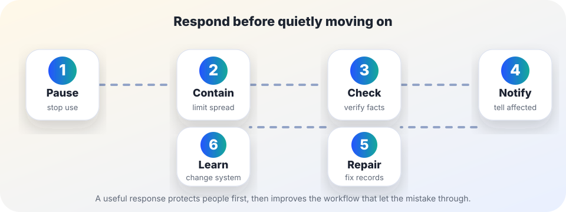

Practical harm reduction
AI incident response: what to do after a mistake gets out.
Use this when an AI-assisted summary, decision, message, recommendation, classification, transcript, citation, or record has already reached a person, file, publication, or workflow and may be wrong or harmful.
The short answer
Do not quietly patch the prompt and move on. First pause the risky use, contain further spread, preserve enough evidence to understand what happened, verify the facts with human review, notify affected people when the mistake could matter, repair the record or decision, and then change the system that let the error through.
This guide borrows the shape of risk management from NIST’s AI Risk Management Framework: govern the process, map context, measure problems, and manage risk. NIST’s generative AI profile also emphasizes monitoring, documenting, and responding to risks over time. For U.S. federal agencies, OMB M-24-10 similarly treats AI governance, risk management, impact assessment, monitoring, and public notice as ongoing duties rather than one-time launch tasks.

1. Triage: decide whether this is an incident
Call it an incident when an AI-assisted output may have created or amplified a wrong record, unsafe recommendation, unfair treatment, privacy exposure, misleading publication, broken promise, or material loss of trust.
Higher-stakes signals
- Rights, benefits, grades, hiring, discipline, housing, health, safety, money, legal position, or access to public services may be affected.
- A person was named, classified, summarized, scored, or accused.
- The AI output was published, emailed, filed, copied into a record, or used in a decision.
Lower-stakes signals
- The error stayed in a draft or private experiment.
- No person, group, record, payment, public claim, or decision was affected.
- The fix is obvious, documented, and unlikely to recur.
If you are unsure whether people were affected, act as if the stakes are higher until you check.
2. Pause and contain
- Stop the risky path. Pause the prompt, workflow, template, bot, integration, or publication path that produced or distributed the mistake.
- Prevent more copies. Remove or clearly mark public pages, drafts, shared documents, knowledge-base entries, queued emails, exports, and downstream automations that may repeat the error.
- Do not delete the evidence you need to understand the problem. Preserve the output, source material, timestamp, model or tool name, prompt or workflow version if available, reviewer notes, and where the output traveled.
- Assign one response owner. A named owner prevents everyone from assuming someone else notified, corrected, or documented the issue.
3. Check the facts outside the AI system
Do not ask the same AI tool whether it was wrong and treat that as review. Use source documents, direct records, domain expertise, or independent measurement.
- Write the exact claim, record, action item, recommendation, or classification that may be wrong.
- Find the original source or authoritative record, not a second AI summary of the first AI summary.
- Separate factual error, missing context, privacy exposure, unfair treatment, unsafe advice, and process failure. Different harms need different repairs.
- Record uncertainty. If you cannot yet tell what happened, say that clearly rather than inventing a clean explanation.
4. Notify affected people without spin
Notification is not always legally required, and this page is not legal advice. But ethically, people should not have to discover a consequential AI-assisted mistake by accident.
A useful notice usually includes:
- what happened, in plain language;
- what is known, what is still uncertain, and what is being checked;
- whether a decision, record, publication, or recommendation is being paused or corrected;
- what the affected person can do now, including who to contact;
- when the next update or final correction will happen.
Good notice reduces confusion. It does not need to overstate blame or pretend the team already knows every cause.
5. Repair the record, decision, and workflow
- Correct the public or internal record. Update the page, file, ticket, grade, transcript, summary, case note, customer message, or decision memo where the mistake landed.
- Undo downstream effects. Check whether the wrong output changed another system, report, dashboard, mailing list, file, or person’s next action.
- Add human review where the risk showed up. Do not rely only on “better prompting” if the failure affected high-stakes information.
- Change the default. If the safe path depends on every person remembering a warning, redesign the workflow so review, source checks, or stop rules are built in.
6. Write a short learning note
Keep the note short enough that people will actually read it later. The goal is prevention, not theater.
- What happened? One or two factual sentences, with dates if relevant.
- Who or what was affected? Include people, records, decisions, publications, and downstream systems.
- Why did it pass review? Missing source check, unclear owner, automation too broad, confusing interface, inadequate training, weak vendor disclosure, or something else.
- What changed? Stop rule, checklist, prompt, permission, monitoring, disclosure, human review, logging, vendor requirement, or retirement of the AI use.
- What remains uncertain? Name the uncertainty instead of turning it into a false lesson.
Copy-paste response note
Incident: An AI-assisted [summary/decision/message/recommendation/record] may have [error or harm].
Current action: We paused [workflow/tool/publication], preserved [evidence], and are checking against [source/record/expert review].
Affected scope: Known affected people, records, or outputs: [list]. Unknowns: [list].
Repair: We will correct [record/decision/publication], notify [people/groups], and update [workflow/control] by [date].
Owner: [person/team role] owns follow-up and will publish or send the next update by [date/time].
Sources and further reading
- NIST — AI Risk Management Framework
- NIST AI 600-1 — Artificial Intelligence Risk Management Framework: Generative Artificial Intelligence Profile
- OMB Memorandum M-24-10 — Advancing Governance, Innovation, and Risk Management for Agency Use of Artificial Intelligence
This guide is educational and operational, not legal, medical, cybersecurity, financial, or compliance advice. For regulated or high-stakes incidents, involve qualified reviewers and follow the applicable law, policy, contract, or incident process.